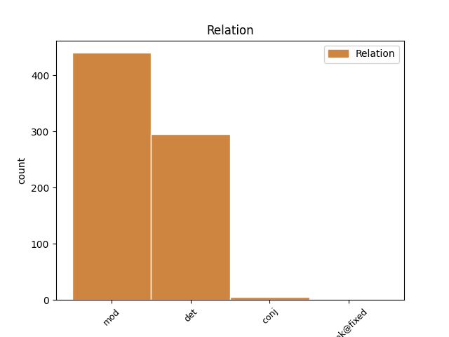
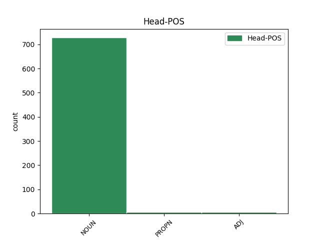
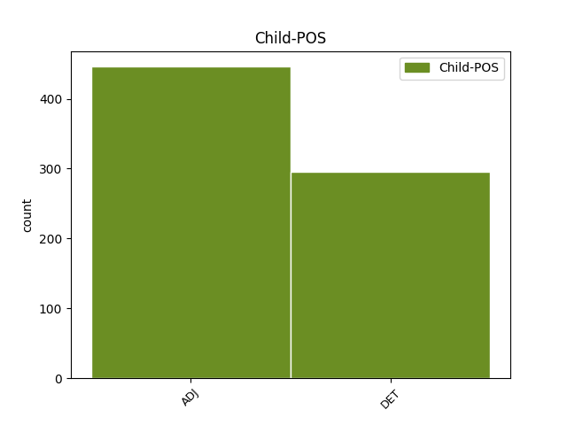

Distribution of features within this leaf



Agreement Rules sorted by frequency.
- When the dependent token is the modifer(mod) of the head token, and the dependent token is ADJ.
1 tè tè NOUN Ncsfn Case=Nom|Gender=Fem|Number=Sing 0 _ _ _
2 ghoirid goirid ADJ Aq-sfn Case=Nom|Gender=Fem|Number=Sing 1 mod _ _
3 gu _ _ _ _ 0 _ _ _
4 Dalgleish _ _ _ _ 0 _ _ _
1 Malpas _ _ _ _ 0 _ _ _
2 gluasad _ _ _ _ 0 _ _ _
3 suas _ _ _ _ 0 _ _ _
4 gu _ _ _ _ 0 _ _ _
5 bucas _ _ _ _ 0 _ _ _
6 na an DET Tdpmg Case=Gen|Gender=Masc|Number=Plur 7 det _ _
7 h-Astràilianaich astràilianach NOUN Ncpmg Case=Gen|Gender=Masc|Number=Plur 0 _ _ _
1 Tha _ _ _ _ 0 _ _ _
2 na _ _ _ _ 0 _ _ _
3 Ruiseanaich _ _ _ _ 0 _ _ _
4 a' _ _ _ _ 0 _ _ _
5 tighinn _ _ _ _ 0 _ _ _
6 an _ _ _ _ 0 _ _ _
7 àite _ _ _ _ 0 _ _ _
8 saighdearan _ _ _ _ 0 _ _ _
9 Duitseach duitseach ADJ Aq-pmg Case=Gen|Gender=Masc|Number=Plur 0 _ _ _
10 agus _ _ _ _ 0 _ _ _
11 Gearmailteach gearmailteach ADJ Aq-pmg Case=Gen|Gender=Masc|Number=Plur 9 conj _ SpaceAfter=No
12 , _ _ _ _ 0 _ _ _
13 ach _ _ _ _ 0 _ _ _
14 tha _ _ _ _ 0 _ _ _
15 muinntir _ _ _ _ 0 _ _ _
16 an _ _ _ _ 0 _ _ _
17 àite _ _ _ _ 0 _ _ _
18 a' _ _ _ _ 0 _ _ _
19 diùltadh _ _ _ _ 0 _ _ _
20 gnothaich _ _ _ _ 0 _ _ _
21 a _ _ _ _ 0 _ _ _
22 ghabhail _ _ _ _ 0 _ _ _
23 riutha _ _ _ _ 0 _ _ _
24 's _ _ _ _ 0 _ _ _
25 iad _ _ _ _ 0 _ _ _
26 ag _ _ _ _ 0 _ _ _
27 ràdh _ _ _ _ 0 _ _ _
28 gun _ _ _ _ 0 _ _ _
29 robh _ _ _ _ 0 _ _ _
30 na _ _ _ _ 0 _ _ _
31 Ruiseanaich _ _ _ _ 0 _ _ _
32 a' _ _ _ _ 0 _ _ _
33 cumail _ _ _ _ 0 _ _ _
34 cùl-taic _ _ _ _ 0 _ _ _
35 ri _ _ _ _ 0 _ _ _
36 na _ _ _ _ 0 _ _ _
37 Sèirbich _ _ _ _ 0 _ _ _
38 ann _ _ _ _ 0 _ _ _
39 a' _ _ _ _ 0 _ _ _
40 cogadh _ _ _ _ 0 _ _ _
41 Chosobho _ _ _ _ 0 _ _ _
42 . _ _ _ _ 0 _ _ _
1 Bha _ _ _ _ 0 _ _ _
2 esan _ _ _ _ 0 _ _ _
3 a' _ _ _ _ 0 _ _ _
4 bruidhinn _ _ _ _ 0 _ _ _
5 an _ _ _ _ 0 _ _ _
6 dèidh _ _ _ _ 0 _ _ _
7 mar _ _ _ _ 0 _ _ _
8 a _ _ _ _ 0 _ _ _
9 rinn _ _ _ _ 0 _ _ _
10 Teàrlach _ _ _ _ 0 _ _ _
11 Peteranna _ _ _ _ 0 _ _ _
12 , _ _ _ _ 0 _ _ _
13 a _ _ _ _ 0 _ _ _
14 tha _ _ _ _ 0 _ _ _
15 'na _ _ _ _ 0 _ _ _
16 bhall _ _ _ _ 0 _ _ _
17 de _ _ _ _ 0 _ _ _
18 Chomataidh _ _ _ _ 0 _ _ _
19 chomhairleachaidh _ _ _ _ 0 _ _ _
20 seirbhis _ _ _ _ 0 _ _ _
21 aiseig _ _ _ _ 0 _ _ _
22 , _ _ _ _ 0 _ _ _
23 nan _ _ _ _ 0 _ _ _
24 eilean _ _ _ _ 0 _ _ _
25 mu mu ADJ Aq-pmg Case=Gen|Gender=Masc|Number=Plur 0 _ _ _
26 dheas deas ADJ Aq-pmg Case=Gen|Gender=Masc|Number=Plur 25 unk@fixed _ _
27 air _ _ _ _ 0 _ _ _
28 a’ _ _ _ _ 0 _ _ _
29 chlàr-ama _ _ _ _ 0 _ _ _
30 ùr _ _ _ _ 0 _ _ _
31 . _ _ _ _ 0 _ _ _
Disagree Examples:
1 Is _ _ _ _ 0 _ _ _
2 dòcha _ _ _ _ 0 _ _ _
3 gum _ _ _ _ 0 _ _ _
4 faod _ _ _ _ 0 _ _ _
5 mi _ _ _ _ 0 _ _ _
6 tòiseachadh _ _ _ _ 0 _ _ _
7 le _ _ _ _ 0 _ _ _
8 iomradh _ _ _ _ 0 _ _ _
9 a _ _ _ _ 0 _ _ _
10 thoirt _ _ _ _ 0 _ _ _
11 air _ _ _ _ 0 _ _ _
12 an _ _ _ _ 0 _ _ _
13 sgoileir _ _ _ _ 0 _ _ _
14 ainmeil _ _ _ _ 0 _ _ _
15 sin _ _ _ _ 0 _ _ _
16 Coinneach _ _ _ _ 0 _ _ _
17 Jackson _ _ _ _ 0 _ _ _
18 a _ _ _ _ 0 _ _ _
19 chuir _ _ _ _ 0 _ _ _
20 snas _ _ _ _ 0 _ _ _
21 fad _ _ _ _ 0 _ _ _
22 iomadach _ _ _ _ 0 _ _ _
23 bliadhna _ _ _ _ 0 _ _ _
24 air _ _ _ _ 0 _ _ _
25 obair _ _ _ _ 0 _ _ _
26 na an DET Tdsfg Case=Gen|Gender=Fem|Number=Sing 27 det _ _
27 Cathair cathair NOUN Ncsfn Case=Nom|Gender=Fem|Number=Sing 0 _ _ _
28 Cheiltis _ _ _ _ 0 _ _ _
29 ann _ _ _ _ 0 _ _ _
30 an _ _ _ _ 0 _ _ _
31 Oilthigh _ _ _ _ 0 _ _ _
32 Dhùn _ _ _ _ 0 _ _ _
33 Èideann _ _ _ _ 0 _ _ _
34 . _ _ _ _ 0 _ _ _
1 An _ _ _ _ 0 _ _ _
2 uair _ _ _ _ 0 _ _ _
3 a _ _ _ _ 0 _ _ _
4 chaidh _ _ _ _ 0 _ _ _
5 an _ _ _ _ 0 _ _ _
6 seann _ _ _ _ 0 _ _ _
7 saoghal _ _ _ _ 0 _ _ _
8 Gàidhealach _ _ _ _ 0 _ _ _
9 am _ _ _ _ 0 _ _ _
10 mutha _ _ _ _ 0 _ _ _
11 - _ _ _ _ 0 _ _ _
12 anns _ _ _ _ 0 _ _ _
13 an _ _ _ _ 0 _ _ _
14 t-seachdamh _ _ _ _ 0 _ _ _
15 ceud _ _ _ _ 0 _ _ _
16 deug _ _ _ _ 0 _ _ _
17 an _ _ _ _ 0 _ _ _
18 Èirinn _ _ _ _ 0 _ _ _
19 agus _ _ _ _ 0 _ _ _
20 anns _ _ _ _ 0 _ _ _
21 an _ _ _ _ 0 _ _ _
22 ochdamh _ _ _ _ 0 _ _ _
23 ceud _ _ _ _ 0 _ _ _
24 deug _ _ _ _ 0 _ _ _
25 an _ _ _ _ 0 _ _ _
26 Alba _ _ _ _ 0 _ _ _
27 - _ _ _ _ 0 _ _ _
28 thànaig _ _ _ _ 0 _ _ _
29 sgrios _ _ _ _ 0 _ _ _
30 cuideachd _ _ _ _ 0 _ _ _
31 air _ _ _ _ 0 _ _ _
32 saoghal _ _ _ _ 0 _ _ _
33 nam _ _ _ _ 0 _ _ _
34 filidhean _ _ _ _ 0 _ _ _
35 agus _ _ _ _ 0 _ _ _
36 nan _ _ _ _ 0 _ _ _
37 seanchaidhean _ _ _ _ 0 _ _ _
38 foghlamaichte _ _ _ _ 0 _ _ _
39 a _ _ _ _ 0 _ _ _
40 bha _ _ _ _ 0 _ _ _
41 a' _ _ _ _ 0 _ _ _
42 cosnadh _ _ _ _ 0 _ _ _
43 am _ _ _ _ 0 _ _ _
44 beò-shlàinte _ _ _ _ 0 _ _ _
45 ann _ _ _ _ 0 _ _ _
46 an _ _ _ _ 0 _ _ _
47 cùirtean _ _ _ _ 0 _ _ _
48 nan _ _ _ _ 0 _ _ _
49 uaislean uaisl NOUN Ncpfg Case=Gen|Gender=Fem|Number=Plur 0 _ _ _
50 móra móra ADJ Aq-pfd Case=Dat|Gender=Fem|Number=Plur 49 mod _ _
51 Gàidhealach _ _ _ _ 0 _ _ _
52 anns _ _ _ _ 0 _ _ _
53 an _ _ _ _ 0 _ _ _
54 dà _ _ _ _ 0 _ _ _
55 dhùthaich _ _ _ _ 0 _ _ _
1 An _ _ _ _ 0 _ _ _
2 uair _ _ _ _ 0 _ _ _
3 a _ _ _ _ 0 _ _ _
4 chaidh _ _ _ _ 0 _ _ _
5 an _ _ _ _ 0 _ _ _
6 seann _ _ _ _ 0 _ _ _
7 saoghal _ _ _ _ 0 _ _ _
8 Gàidhealach _ _ _ _ 0 _ _ _
9 am _ _ _ _ 0 _ _ _
10 mutha _ _ _ _ 0 _ _ _
11 - _ _ _ _ 0 _ _ _
12 anns _ _ _ _ 0 _ _ _
13 an _ _ _ _ 0 _ _ _
14 t-seachdamh _ _ _ _ 0 _ _ _
15 ceud _ _ _ _ 0 _ _ _
16 deug _ _ _ _ 0 _ _ _
17 an _ _ _ _ 0 _ _ _
18 Èirinn _ _ _ _ 0 _ _ _
19 agus _ _ _ _ 0 _ _ _
20 anns _ _ _ _ 0 _ _ _
21 an _ _ _ _ 0 _ _ _
22 ochdamh _ _ _ _ 0 _ _ _
23 ceud _ _ _ _ 0 _ _ _
24 deug _ _ _ _ 0 _ _ _
25 an _ _ _ _ 0 _ _ _
26 Alba _ _ _ _ 0 _ _ _
27 - _ _ _ _ 0 _ _ _
28 thànaig _ _ _ _ 0 _ _ _
29 sgrios _ _ _ _ 0 _ _ _
30 cuideachd _ _ _ _ 0 _ _ _
31 air _ _ _ _ 0 _ _ _
32 saoghal _ _ _ _ 0 _ _ _
33 nam _ _ _ _ 0 _ _ _
34 filidhean _ _ _ _ 0 _ _ _
35 agus _ _ _ _ 0 _ _ _
36 nan _ _ _ _ 0 _ _ _
37 seanchaidhean _ _ _ _ 0 _ _ _
38 foghlamaichte _ _ _ _ 0 _ _ _
39 a _ _ _ _ 0 _ _ _
40 bha _ _ _ _ 0 _ _ _
41 a' _ _ _ _ 0 _ _ _
42 cosnadh _ _ _ _ 0 _ _ _
43 am _ _ _ _ 0 _ _ _
44 beò-shlàinte _ _ _ _ 0 _ _ _
45 ann _ _ _ _ 0 _ _ _
46 an _ _ _ _ 0 _ _ _
47 cùirtean _ _ _ _ 0 _ _ _
48 nan _ _ _ _ 0 _ _ _
49 uaislean uaisl NOUN Ncpfg Case=Gen|Gender=Fem|Number=Plur 0 _ _ _
50 móra _ _ _ _ 0 _ _ _
51 Gàidhealach gàidhealach ADJ Aq-pfd Case=Dat|Gender=Fem|Number=Plur 49 mod _ _
52 anns _ _ _ _ 0 _ _ _
53 an _ _ _ _ 0 _ _ _
54 dà _ _ _ _ 0 _ _ _
55 dhùthaich _ _ _ _ 0 _ _ _
1 Tha _ _ _ _ 0 _ _ _
2 a’ _ _ _ _ 0 _ _ _
3 buidhean _ _ _ _ 0 _ _ _
4 iomairt iomairt NOUN Ncsfg Case=Gen|Gender=Fem|Number=Sing 0 _ _ _
5 niùclasach niùclasach ADJ Aq-smn Case=Nom|Gender=Masc|Number=Sing 4 mod _ _
6 SAND _ _ _ _ 0 _ _ _
7 tàmailteach _ _ _ _ 0 _ _ _
8 nach _ _ _ _ 0 _ _ _
9 do _ _ _ _ 0 _ _ _
10 dh’iarr _ _ _ _ 0 _ _ _
11 ionad _ _ _ _ 0 _ _ _
12 Dùn _ _ _ _ 0 _ _ _
13 Rath _ _ _ _ 0 _ _ _
14 fiosrachadh _ _ _ _ 0 _ _ _
15 orra _ _ _ _ 0 _ _ _
16 fhèin _ _ _ _ 0 _ _ _
17 's _ _ _ _ 0 _ _ _
18 air _ _ _ _ 0 _ _ _
19 luchd-iomairt _ _ _ _ 0 _ _ _
20 eile _ _ _ _ 0 _ _ _
21 mu _ _ _ _ 0 _ _ _
22 rannsachadh _ _ _ _ 0 _ _ _
23 a _ _ _ _ 0 _ _ _
24 rinn _ _ _ _ 0 _ _ _
25 iad _ _ _ _ 0 _ _ _
26 . _ _ _ _ 0 _ _ _
1 Tha _ _ _ _ 0 _ _ _
2 companaidh _ _ _ _ 0 _ _ _
3 dhrugaichean druga NOUN Ncpmg Case=Gen|Gender=Masc|Number=Plur 0 _ _ _
4 Ameireaganach ameireaganach ADJ Aq-sfn Case=Nom|Gender=Fem|Number=Sing 3 mod _ _
5 dol _ _ _ _ 0 _ _ _
6 a _ _ _ _ 0 _ _ _
7 dhùblachadh _ _ _ _ 0 _ _ _
8 àireamh _ _ _ _ 0 _ _ _
9 an _ _ _ _ 0 _ _ _
10 luchd _ _ _ _ 0 _ _ _
11 obrach _ _ _ _ 0 _ _ _
12 ann _ _ _ _ 0 _ _ _
13 an _ _ _ _ 0 _ _ _
14 Alba _ _ _ _ 0 _ _ _
15 , _ _ _ _ 0 _ _ _
16 le _ _ _ _ 0 _ _ _
17 bhith _ _ _ _ 0 _ _ _
18 stèidheachadh _ _ _ _ 0 _ _ _
19 mìle _ _ _ _ 0 _ _ _
20 cosnadh _ _ _ _ 0 _ _ _
21 as _ _ _ _ 0 _ _ _
22 ùr _ _ _ _ 0 _ _ _
23 . _ _ _ _ 0 _ _ _